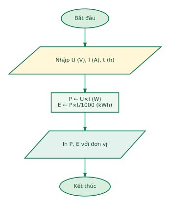

Khóa học / Mô-đun 1 / Bài 02
01 Mục tiêu và kiến thức tiên quyết
- Phân biệt biến, kiểu int/float/bool/str và toán tử gán với so sánh.
- Thiết lập biểu thức công suất–điện năng đúng thứ nguyên, kiểm tra phép đổi W sang kW.
- Trình bày kết quả bằng f-string, kiểm tra kết quả với giá trị bằng không.
Kiến thức tiên quyết: bài trước, kiến thức lập trình tương ứng.
02 Tình huống kỹ thuật
Một tải DC được cấp điện áp 12 V, dòng điện 5 A trong 2 h. Tính công suất điện đầu vào theo W và điện năng theo Wh, kWh; tránh dùng nhầm đơn vị.
U = 12 V; I = 5 A; t = 2 h.
P = 60 W, E = 120 Wh = 0,120 kWh.
03 Kiến thức và thuật ngữ cốt lõi
Biến và kiểu đối tượng
Python gán tên tới đối tượng có kiểu dữ liệu; không cần khai báo kiểu tĩnh. input() trả về chuỗi, nên muốn tính số học cần chuyển đổi có kiểm tra.
Biểu thức và thứ tự toán tử
Các toán tử /, //, % và ** có ý nghĩa khác nhau. Trong Python 3, 5/2 cho kết quả float 2.5; 5//2 cho 2, còn 5%2 cho 1.
Thứ nguyên
Khi U tính bằng V và I bằng A, công suất điện một chiều P = U × I tính bằng W. E = P × t với t tính bằng giờ cho Wh; chia 1.000 để thu kWh.
Số thực và hiển thị
Số thực được biểu diễn gần đúng trên máy tính. f-string với :.2f làm tròn hiển thị, không bảo đảm độ chính xác phép đo thực tế.
04 Xây dựng và kiểm tra thuật toán
Trước khi xem chương trình, hãy đọc dữ liệu đầu vào, chọn điều kiện rẽ nhánh hoặc lặp, rồi dự đoán kết quả. Mã giả mô tả ý nghĩa thuật toán; không phải cú pháp Python thực thi được.

Mã giả
Lần vết các bước phân tích
Đây là lần vết các dòng mã giả, không phải trình thông dịch Python. Tự kiểm tra nhánh điều kiện bằng bảng ca kiểm thử ở mục 07.
05 Chương trình Python đã kiểm tra
Đọc mã, dự đoán kết quả và chạy tệp bai_02.py trong thư mục code. Các mã bài 9 trở lên có thể cần dữ liệu đi kèm từ thư mục data.
dien_ap_v = 12.0
dong_dien_a = 5.0
thoi_gian_h = 2.0
cong_suat_w = dien_ap_v * dong_dien_a
dien_nang_wh = cong_suat_w * thoi_gian_h
dien_nang_kwh = dien_nang_wh / 1000
print(f"P = {cong_suat_w:.0f} W")
print(f"E = {dien_nang_wh:.0f} Wh = {dien_nang_kwh:.3f} kWh")
06 Thử nghiệm tham số có hướng dẫn
Thay đổi đầu vào để kiểm tra trực giác và đối chiếu với kết quả dự đoán. Trình khám phá này được lập trình lại bằng JavaScript theo bài toán minh họa, không phải kết quả chạy mã Python.
07 Thực hành và kiểm thử
Thực hiện các nhiệm vụ theo thứ tự từ có hướng dẫn đến độc lập; ghi lại kết quả thực tế của chương trình và so sánh với kết quả kỳ vọng.
- Thử thay đổi I để kiểm tra quan hệ P–I và lập bảng kết quả.
- Viết chương trình nhập U, I, t; chuyển input() sang float.
- Tạo hai biểu thức tính năng lượng và giải thích tại sao kết quả phải chia 1000.
Bảng kiểm thử bắt buộc
| Ca kiểm thử | Dữ liệu/điều kiện | Kết quả kỳ vọng |
|---|---|---|
| Điển hình | 12 V; 5 A; 2 h | 60 W; 0,120 kWh |
| Không tải | I = 0 A | P = 0 W |
| Không vận hành | t = 0 h | E = 0 kWh |
| Kiểm tra thứ nguyên | E_Wh / 1000 | đơn vị kWh |
08 Vận dụng vào chuyên ngành
Áp dụng với nguồn DC của bộ giám sát; phân biệt với công suất tiêu thụ điện lưới xoay chiều.
Ước tính điện năng của tải phụ trên ô tô khi biết U, I gần như không đổi.
09 Trắc nghiệm và phản hồi
Mỗi câu có bốn phương án A/B/C/D. Chọn một phương án cho mỗi câu rồi nhấn Chấm và giải thích để xem vì sao từng phương án đúng hoặc chưa phù hợp.
Rubric tham khảo (100 điểm)
| Thành phần | Điểm |
|---|---|
| Đặc tả dữ liệu, đơn vị, giả thiết | 20 |
| Mã giả, trình tự thuật toán | 20 |
| Mã Python và tổ chức hàm/dữ liệu | 25 |
| Kiểm thử, đối chiếu, phân tích sai số | 25 |
| Giải thích và đề xuất cải tiến | 10 |
10 Nhật ký học tập và đánh dấu tiến độ
Tiến độ và ghi chép chỉ lưu trong trình duyệt hiện tại; không đồng bộ với hệ thống điểm của trường.
11 Tài liệu tham khảo và nguồn
| Nguồn | Vai trò và phạm vi sử dụng |
|---|---|
| Pythonlearn-02-Expressions.pptx | C. Severance, Python for Everybody — Chương 2, biến, biểu thức, nhập/xuất. |
| PythonCoban_UTEHY.pdf | N. V. Hậu và cộng sự, Python cơ bản — các bài nền tảng tương ứng. |
| BAI THUC HANH PYTHON CO BAN 2022.pdf | Khoa CNTT, bài thực hành Python cơ bản — nhập/xuất, điều khiển, dữ liệu, hàm và tổng hợp. |
Học liệu mới được viết lại theo định hướng sư phạm. Không trích lại nguyên văn hoặc phân phối các slide/sách gốc trong gói website.